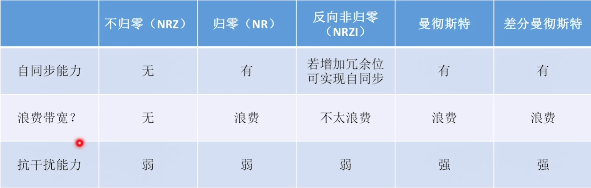
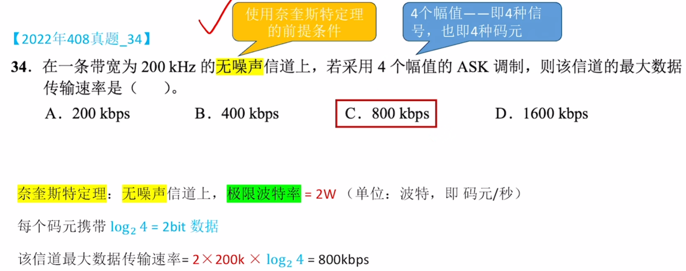
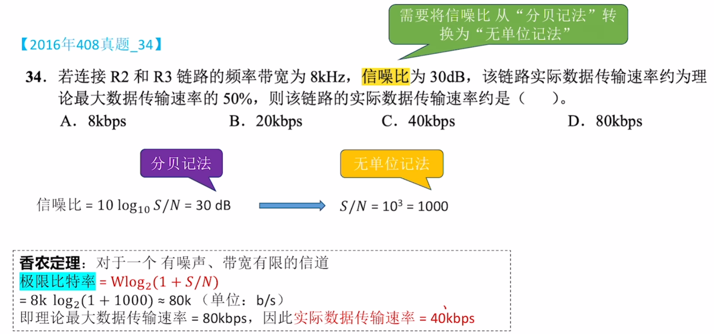

2-1通信基础
通信基础
[toc]
物理层的基础概念
物理层的主要任务描述为确定与传输媒体的接口相关的一些特性
- 机械特性
- 电气特性
- 功能特性
- 过程特性
数据通信的基础知识
数据通信系统的模型
通信目的：传输数据。
数据通信系统主要分为信源、信道、信宿三部分。

常用术语
-
数据：传送信息的实体。
-
信号：数据的电气或电磁表现，是数据在传输过程中的存在形式。
-
码元：常用一个固定时长的信号波形表示一位进制数字，这个时长内的信号称为码元（可称进制码元）。每一个信号就是一个码元。一个周期内可能出现种信号，则：
- 码元宽度：上述固定时长，也称信号周期。1码元可携带若干比特的信息量。
-
信源：产生和发送数据的源头。
-
信道：信号的传输介质。
-
信宿：接收数据的终点。
-
噪声源：信道上的噪声及分散在通信系统其他各处的噪声集中表示。
-
信道分类：
-
按传输信号形式：模拟信道、数字信道
-
按传输介质：无线信道、有线信道
-
-
信号类型与传输：
-
基带信号：信源发出的未调制原始电信号。基带传输：直接在信道中传送基带信号。
-
宽带信号：先将基带信号调制，形成频分复用模拟信号，再在模拟信道传输，宽带传输。
-
-
数据传输方式：
-
串行传输：逐比特按序依次传输，适用于长距离通信，如计算机网络。
-
并行传输：若干比特通过多个通信信道同时传输，适用于近距离通信，如计算机内部（CPU与主存之间）。
-
-
通信双方信息交互方式：
-
单向通信：只有一个方向通信，无反向交互。特点：只需一个信道。
-
半双工通信：双方都能发或收信息，但不能同时进行。特点：需两个信道，每个方向一个。
-
全双工通信：双方可同时发送和接收信息。特点：需两个信道，每个方向一个。
-
编码与调制
-
编码：将二进制数据转换为数字信号的过程。
-
调制：将二进制数据转换为模拟信号的过程。
-
基带传输：直接传输数字信号的原始电脉冲形式（如矩形脉冲），信号的频率范围从 0Hz 附近开始（包含直流成分），无需经过调制处理。
-
频带传输：将数字信号通过调制技术（如 ASK、FSK、PSK 等）转换为模拟信号（加载到高频载波上），使其能在模拟信道（如电话线路）中传输，接收端再通过解调恢复为数字信号。
-
宽带传输：利用宽频带信道（带宽通常超过 1MHz），通过频分复用技术将信道划分为多个子信道，同时传输多路数字或模拟信号（如语音、视频、数据）
常见编码方式

- 非归零（NRZ）编码：
- 与RZ编码的区别在于不用归零，一个时钟周期全部用于传输数据，编码效率最高。中不变
- 但NRZ编码存在收发双方同步问题，因此需要双方都配备时钟线。
- 归零（RZ）编码：
- 用高电平表示“1”、低电平表示“0”（或相反）。中不变
- 每个码元中间均跳变到零电平（归零）。接收方依据该跳变调整自身时钟基准，为收发双方提供自同步机制。
- 由于归零需占用部分带宽，传输效率受一定影响。
- 反向非归零（NRZI，Non-Return-to-Zero Inverted）编码：
- 与NRZ编码不同，用电平跳变表示“0”，电平保持不变表示“1”。跳变信号自身可作为一种通知机制。跳0不跳1
- 这种编码方式融合了前两种编码的优点，既能传输时钟信号，又能尽量不损失系统带宽。例如，USB2.0采用的就是NRZI编码。
- 曼彻斯特编码：
- 每个码元中间都发生电平跳变，该电平跳变既作为时钟信号（用于同步），又作为数据信号。
- 可规定向下跳变表示“1”、向上跳变表示“0”，也可采用相反规定。跳0反跳1看中间，中必变。中间跳变方向和二进制能一一对应
- 差分曼彻斯特编码：
- 每个码元中间同样发生电平跳变，但与曼彻斯特编码不同，此处电平跳变仅表示时钟信号，不表示数据。跳0反跳1看起点，中必变
- 数据通过每个码元开始处是否有电平跳变来表示：无跳变表示“1”，有跳变表示“0”。该编码具有更强抗干扰能力。
重点：曼彻斯特编码和差分曼彻斯特编码在每个码元中间都发生电平跳变，相当于将一个码元一分为二，编码速率是码元速率的2倍，二者所占频带宽度是原始基带宽度的2倍。标准以太网采用曼彻斯特编码，差分曼彻斯特编码广泛应用于宽带高速网。

基本的带通(数字)调制方法

- 调幅（AM）/幅移键控（ASK）：
- 通过改变载波的振幅来表示数字信号“1”和“0”。例如，用有载波输出表示“1”，无载波输出表示“0”。
- 特点：实现相对容易，但抗干扰能力较差。
- 调频（FM）/频移键控（FSK）：
- 通过改变载波的频率来表示数字信号“1”和“0”。例如，用频率 $ f_1 $ 和频率 $ f_2 $ 分别表示“1”和“0”。
- 特点：易于实现，抗干扰能力强，当前应用较为广泛。
- 调相（PM）/相移键控（PSK）：
- 通过改变载波的相位来表示数字信号“1”和“0”，分为绝对调相和相对调相。例如，用相位 $ 0 $ 和 $ \pi $ 分别表示“1”和“0”，这是一种绝对调相方式。
- 正交幅度调制（QAM）：
- 在频率相同的情况下，将AM与PM相结合，形成叠加信号。
- 设波特率为 $ B $，采用 $ m $ 个相位，每个相位有 $ n $ 种振幅，则该QAM的数据传输速率 $ R $ 为：$R = B\log_2(mn) \text{（单位为b/s）} $
- QAM-16：采用QAM调制技术，有16种码元
信道的极限容量
任何实际的信道都并非理想状态，信号在信道传输时会产生失真。
- 可接受的失真：只要接收端能从失真的信号波形中识别出原始信号，那么这种失真对通信质量无影响。
- 严重失真：若信号失真严重，接收端将无法识别每个码元。
- 影响失真因素：
- 码元传输速率：速率越高，失真越严重。
- 信号传输距离：距离越远，失真越严重。
- 噪声干扰：干扰越大，失真越严重。
- 传输介质质量：质量越差，失真越严重。
奈奎斯特定理（奈氏定理）
无噪声情况下信道的极限波特率
具体的信道所能通过的频率范围是有限的。信号中的高频分量常无法通过信道，在传输中会衰减，致使接收端收到的信号波形失去码元间清晰界限，此现象称为码间串扰。
奈氏定理规定：在**理想低通（无噪声、带宽有限）**信道中，为避免码间串扰，极限码元传输速率为波特(码元/秒)，其中是信道的频率带宽（单位：）。
若用表示每个码元的离散电平数目（例如，若有种不同码元，需个二进制位，数据传输速率就是码元传输速率的倍），则极限数据率为：
对于奈氏准则，有以下重点结论：
- 码元传输速率上限：在任何信道中，码元传输速率存在上限。若传输速率超过该上限，会出现严重码间串扰问题，导致接收端无法完全正确识别码元。
- 频带与传输速率关系：信道的频带越宽（即通过的信号高频分量越多），就越能够用更高的速率有效地传输码元。
- 对信息传输速率的影响：奈氏准则给出了码元传输速率的限制，但未限制信息传输速率，即未对一个码元可对应多少个二进制位作出限制。
由于码元传输速率受奈氏准则制约，所以要提高数据传输速率，需设法使每个码元携带更多比特的信息量，此时常采用多元制的调制方法。

香农定理
有噪声的情况下信道的极限比特率
实际信道存在噪声，且噪声随机产生。香农定理给出了带宽受限且有高斯噪声干扰的信道的极限数据传输速率，在此速率下传输数据不会产生差错。其定义为：
式中，为信道的频率带宽（单位为），即：
为信道内新传输信号的平均功率，为信道内的高斯噪声功率。为信噪比(无单位)，即信号的平均功率与噪声的平均功率之比，且信噪比：
- 信噪比有两种表示形式：
- 无单位记法：，使用香农定理时，采用无单位记法。
- 分贝记法：
对于香农定理，重点结论如下：
- 速率与带宽、信噪比的关系：信道的带宽或信道中的信噪比越大，信息的极限传输速率越高。
- 速率上限的确定性：对一定的传输带宽和一定的信噪比，信息传输速率的上限是确定的。
- 无差错传输条件：只要信息传输速率低于信道的极限传输速率，就能找到某种方法实现无差错的传输。
- 实际与理论的差距：香农定理得出的是极限信息传输速率，实际信道能达到的传输速率要比它低不少。

对比奈氏准则：奈氏准则只考虑了带宽与极限码元传输速率之间的关系，而香农定理不仅考虑了带宽，也考虑了信噪比。这从另一个侧面表明，一个码元对应的二进制位数是有限的。